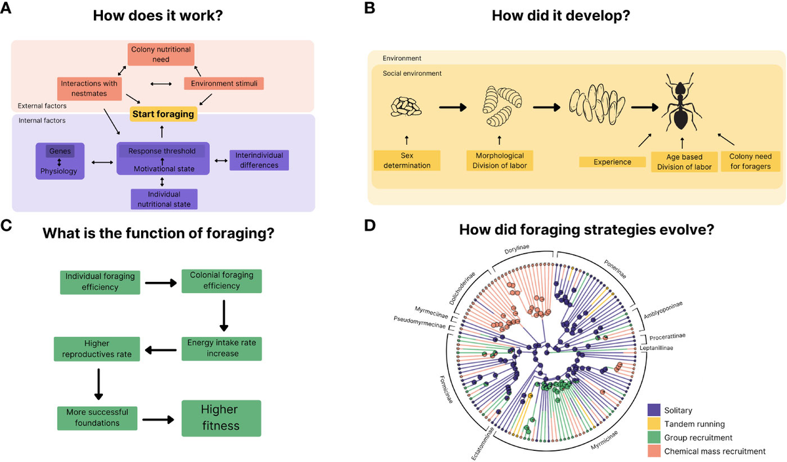
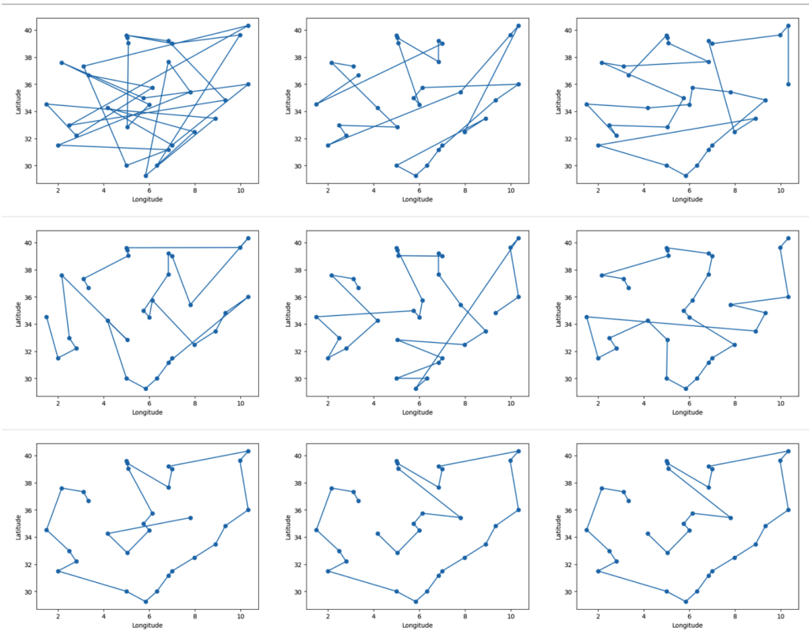
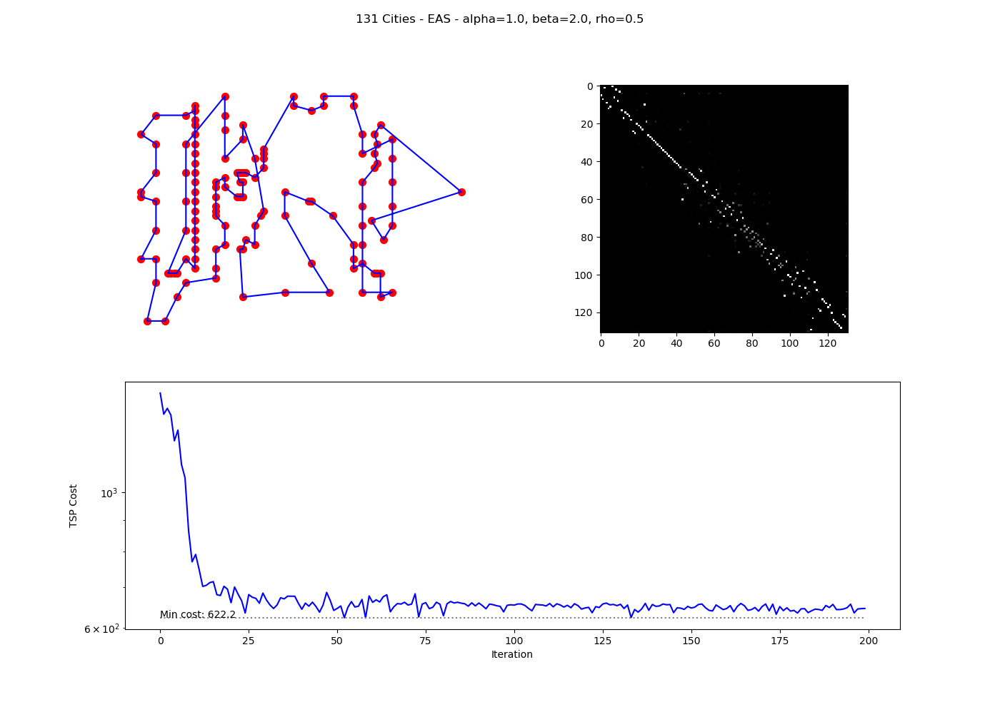

Stochastic Foraging 🐜 - The Ant Scout's Blind Vision
Ukubona LLC Logo Provocation
In the wild of uncertainty, "Ukubona" — to see — becomes a paradox: vision in blindness. Like an ant scout, we forage stochastically, probing the unknown without a map. Our logo? A compass radaring at 360 degrees every 60 seconds, eternally scanning the horizon for signals in the noise.
This isn't passive observation; it's active survival. In calculus terms, it's gradient descent in the dark: feel the slope, step humbly, adapt or perish.
The Compass as Stochastic Radar
360 Degrees / 60 Seconds: Eternal Vigilance
Imagine a compass not pointing north, but pulsing outward in all directions, every minute resetting its scan. This is stochastic foraging visualized: blind to the global optimum, yet attuned to local gradients. The ant scout doesn't know the colony's path; it wanders, samples, returns with probabilistic intel.
In SGD parlance: \( \theta_{t+1} = \theta_t - \eta \cdot \nabla J(\theta_t + \epsilon) \), where \(\epsilon\) is the blind forage, the radar's noise injecting exploration into exploitation.
Blind Seeing: From Intuition to Rigor
Subsuming Foraging in Pentadic Calculus
The ant's blind path rigorizes into the pentad: locus (current position), expectation (pheromone trail), velocity (forage speed), volatility (environmental noise), and integral (accumulated survival). Our logo embodies this: the radar sweep as derivative probe, the 60-second cycle as iterative update.
Reasonableness? In survival's stochastic wild, total vision is hubris. Ukubona LLC forages humbly, witnessing the mirror of adaptation.
Logo in the Stochastic Wild: Survival Accounting
Ant Scout Meets Compass Radar
Ukubona's emblem: an ant atop a compass, radaring blindly. 360 degrees symbolize infinite dimensions; 60 seconds, the heartbeat of iteration. This is Ukhona's accounting — tallying blind steps toward minima, whether in markets, music, or medicine.
From Heraclitean flux to quantum dice: we step, not map. The logo provokes: See blindly, or stagnate in the dark.
Musical Echoes: Groove in Blind Foraging
Radar as Rhythmic Pulse
In music theory, the logo's 60-second radar is metronomic yet stochastic — like jazz improvisation, feeling the pocket without seeing the score. Ant scouts syncopate: wander off-beat, return on-phrase. Calculus subsumes: descent via rhythmic gradients, minimizing dissonance in the auditory wild.
Our emblem radars the groove: 360 degrees of harmonic possibility, scanned blindly every measure.
Exploring Ant Foraging Algorithms
From Biology to Computation
Ant foraging algorithms draw inspiration from the remarkable collective behaviors observed in real ant colonies, where simple individual actions lead to efficient group-level problem-solving. These biological processes have been abstracted into computational models, most notably Ant Colony Optimization (ACO), which applies to various optimization challenges. Below, we delve into the biological foundations, computational adaptations, key examples like the "anternet," and a practical simulation.
Biological Foundations of Ant Foraging
I. Stigmergy — Indirect Communication
1. Pheromone Trails as Collective Memory
Real ants exhibit sophisticated foraging without central control, relying on stigmergy—indirect communication through environmental modifications, primarily via pheromone trails. When an ant discovers food, it deposits pheromones on its return path to the nest. Other ants detect these chemicals and probabilistically follow stronger trails, creating positive feedback: successful paths accumulate more pheromones, while unused ones fade due to evaporation. This balances exploration (random initial searches) and exploitation (reinforcing good paths).
2. The Double-Bridge Experiment
Key experiments, such as the double-bridge setup, demonstrate this: ants placed between a nest and food source with two unequal bridges initially explore randomly but converge on the shorter bridge as pheromones build faster on it. In dynamic scenarios, evaporation prevents stagnation, allowing adaptation if food sources change.
3. Gordon's Harvester Ants: Local Interactions, Global Regulation
Deborah Gordon's research on harvester ants highlights how colonies regulate foraging via local interactions: an ant decides to forage based on the rate of encountering returning foragers with food. This positive feedback ensures activity scales with resource availability, akin to evolutionary pressures in arid environments where water conservation influences behavior. Larger, older colonies show more stable responses, ignoring minor disturbances.

Ant Colony Optimization (ACO)
II. From Biology to Computation
1. The Algorithm Genesis
ACO, first proposed by Marco Dorigo in 1992, mimics ant foraging to solve graph-based optimization problems like the Traveling Salesman Problem (TSP). Artificial "ants" construct solutions on a graph, depositing virtual pheromones on promising components, with evaporation promoting diversity.
2. Key Principles
- Pheromone Trails (τ): Represent solution quality.
- Heuristic Information (η): Often inverse distance (e.g., $1/d$ for edges).
- Probabilistic Choice: Ants select next steps with probability
where $\alpha$ and $\beta$ weight pheromone and heuristic.
- Updates: After tours, pheromones evaporate ($\tau \leftarrow (1 - \rho)\tau$) and are reinforced ($\Delta\tau = Q / L$ for tour length $L$).
- Stigmergy in ACO: Ants communicate indirectly via a shared pheromone matrix, leading to emergent optimal paths.
3. Algorithm Steps
- Initialize pheromones uniformly.
- Each ant builds a solution stochastically.
- Evaluate solutions (e.g., tour cost).
- Update pheromones globally, favoring better solutions.
- Repeat until convergence or max iterations.
ACO Variants
III. Evolution of the Algorithm
1. Taxonomic Overview
| Variant | Key Features |
|---|---|
| Ant System (AS) | Basic global update; prone to stagnation. |
| Ant Colony System (ACS) | Local updates during construction; elitist global reinforcement. |
| Max-Min Ant System (MMAS) | Bounds pheromones to $[\tau_{\min}, \tau_{\max}]$ for better exploration. |
| Elitist AS | Best solution always deposits extra pheromones. |
| Rank-Based AS | Weights updates by solution rank. |
2. Applications
ACO excels in NP-hard problems:
- Routing: TSP, vehicle routing.
- Scheduling: Job-shop, flow-shop.
- Assignment: Quadratic assignment, graph coloring.
- Other: Protein folding, network routing, image processing.
It adapts to dynamic environments, like changing graphs in telecom.

The "Anternet"
IV. Parallels to Internet Protocols
1. TCP in the Wild
Gordon and Balaji Prabhakar discovered that harvester ants' foraging mirrors the Transmission Control Protocol (TCP) for internet data traffic—coining it the "anternet." Ants adjust foraging rates based on returning foragers' speed, similar to TCP using packet acknowledgments to gauge bandwidth: fast returns increase activity (like ramping up data flow), slow returns reduce it (avoiding congestion).
2. Experimental Validation
Experiments confirmed this: manipulating return rates matched TCP-inspired predictions, including "slow start" (initial probing) and "timeout" (halting if no returns). This suggests ant algorithms could inspire robust, decentralized networks, such as distributed robotics or sensor systems.
3. Implications for Network Design
The anternet demonstrates that biological systems have independently evolved solutions to computational problems. Key takeaways for network engineering:
- Decentralized control scales better than hierarchical architectures
- Local feedback (encounter rates) can regulate global behavior (colony foraging efficiency)
- Adaptive bandwidth allocation emerges without centralized coordination
- Robustness to node failure is inherent in the protocol
Practical Simulation
V. Basic ACO for TSP
1. Problem Setup
To illustrate, consider a simple Python implementation of Ant System for a 5-city TSP with the distance matrix:
$$ \begin{bmatrix} 0 & 2 & 9 & 10 & 7 \\ 2 & 0 & 6 & 4 & 3 \\ 9 & 6 & 0 & 8 & 5 \\ 10 & 4 & 8 & 0 & 1 \\ 7 & 3 & 5 & 1 & 0 \end{bmatrix} $$2. Results
Running 10 ants over 50 iterations with parameters ($\alpha=1$, $\beta=5$, $\rho=0.5$, $Q=100$) yields:
- Best tour: $[4, 3, 1, 0, 2, 4]$
- Best cost: $21$
The cost stabilizes early, demonstrating convergence via pheromone reinforcement. In larger problems, variants like MMAS improve performance.

Synthesis: Nature's Efficiency
VI. Decentralized Systems
1. Emergent Intelligence
Ant foraging algorithms showcase nature's efficiency in decentralized systems, with broad implications for AI, networking, and optimization. The key insight is that complex global behavior emerges from simple local rules:
2. Core Principles Abstracted
- No central coordinator: Each agent (ant/algorithm) operates independently
- Stigmergy: Indirect communication via environment (pheromones/data structures)
- Positive feedback: Good solutions are reinforced exponentially
- Evaporation/forgetting: Poor solutions fade, maintaining adaptability
- Stochastic exploration: Randomness prevents premature convergence
3. Cross-Domain Applications
The mapping from biological foraging to computational optimization reveals universal patterns:
- Logistics: Vehicle routing, warehouse management
- Telecommunications: Network routing, load balancing
- Manufacturing: Job scheduling, assembly line optimization
- Robotics: Swarm coordination, path planning
- Finance: Portfolio optimization, trading strategies
- Bioinformatics: Protein structure prediction, DNA sequencing
4. The Ukubona Connection
Just as ants "see" via pheromone gradients (ukubona — to see blindly), ACO algorithms navigate solution spaces through indirect feedback. The 360°/60s compass metaphor applies: each ant's random walk samples the landscape, and the colony integrates these measurements into an emergent understanding of optimal paths. This is stochastic foraging distilled into computational form— survival through gradient descent in the dark.
Mathematical Formalism
VII. The Pheromone Update Rule
1. Global Update Equation
The complete pheromone update in Ant System combines evaporation and deposition:
$$ \tau_{ij}(t+1) = (1-\rho) \cdot \tau_{ij}(t) + \sum_{k=1}^{m} \Delta\tau_{ij}^k $$where:
- $\tau_{ij}(t)$ is pheromone on edge $(i,j)$ at time $t$
- $\rho \in [0,1]$ is evaporation rate
- $m$ is number of ants
- $\Delta\tau_{ij}^k$ is pheromone deposited by ant $k$
2. Ant Deposition Strategy
For ant $k$ that used edge $(i,j)$ in its tour:
$$ \Delta\tau_{ij}^k = \begin{cases} \frac{Q}{L_k} & \text{if edge } (i,j) \text{ in tour } k \\ 0 & \text{otherwise} \end{cases} $$where $Q$ is a constant and $L_k$ is the total tour length for ant $k$.
3. Probabilistic State Transition
When ant $k$ at city $i$ chooses next city $j$:
$$ p_{ij}^k = \begin{cases} \frac{[\tau_{ij}]^\alpha \cdot [\eta_{ij}]^\beta}{\sum_{l \in \mathcal{N}_i^k} [\tau_{il}]^\alpha \cdot [\eta_{il}]^\beta} & \text{if } j \in \mathcal{N}_i^k \\ 0 & \text{otherwise} \end{cases} $$where:
- $\mathcal{N}_i^k$ is the set of feasible cities for ant $k$ at city $i$
- $\eta_{ij} = 1/d_{ij}$ is heuristic desirability (inverse distance)
- $\alpha$ controls pheromone influence
- $\beta$ controls heuristic influence
4. The Gradient Descent Analogy
Compare to SGD: $\theta_{t+1} = \theta_t - \eta \nabla J(\theta_t)$
In ACO, the "gradient" is the pheromone landscape $\tau$, the "learning rate" is $\rho$ (evaporation), and the "loss" is tour length $L$. Instead of deterministic descent, we have probabilistic ascent toward high-pheromone regions, with noise ($\beta$ heuristic) preventing local optima.